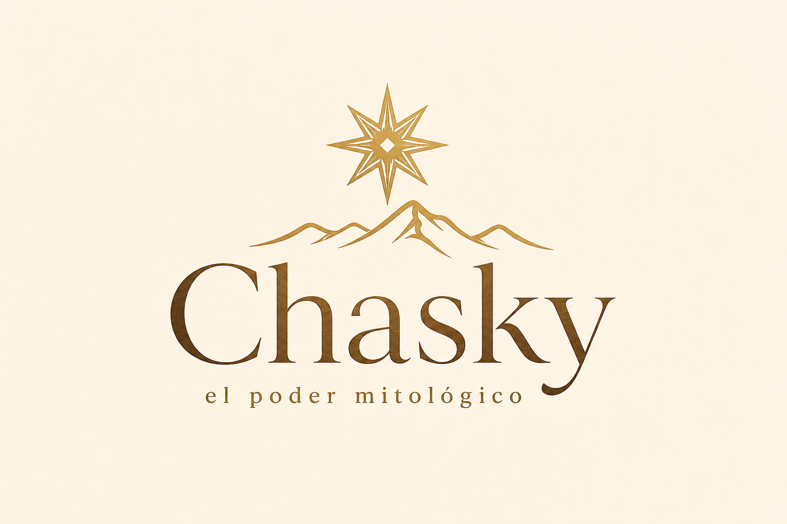
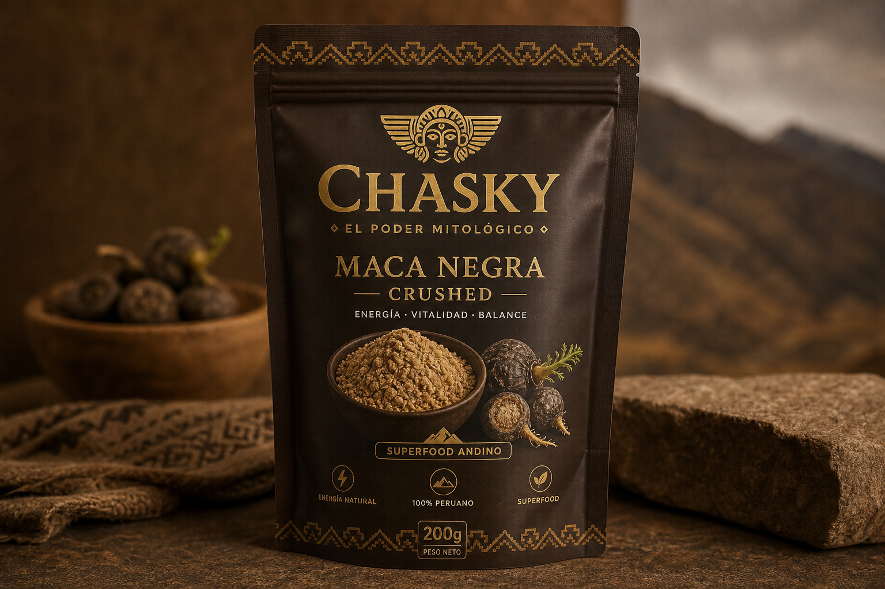
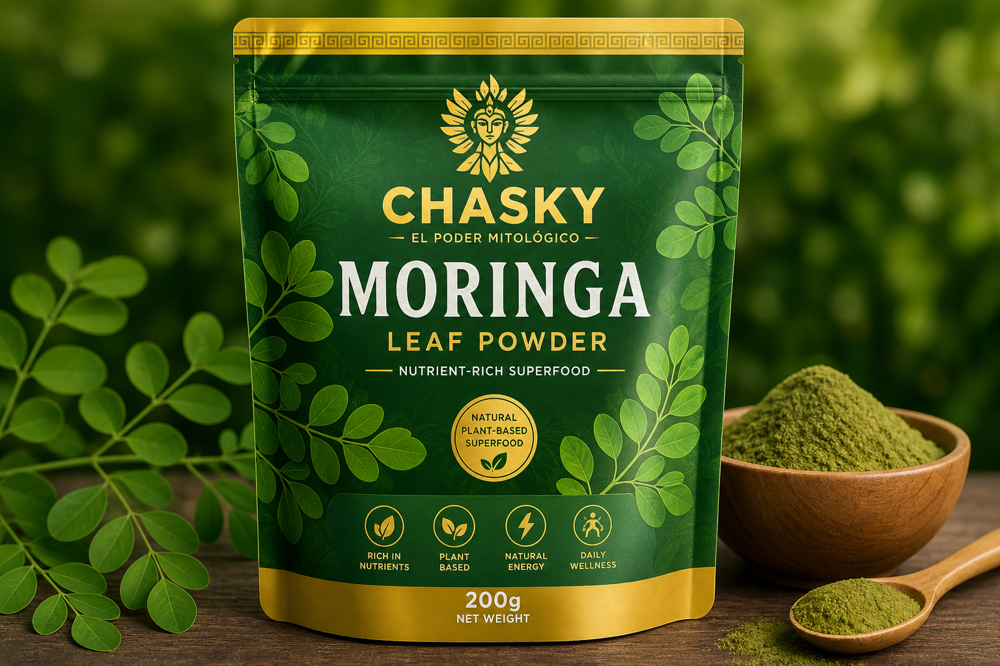

Plantas Medicinales · Emet Geulah Enterprise
Chaski, el poder mitológico
Exportación de harinas finas peruanas —Maca negra, Moringa y Muña— de los Andes a Israel y al mundo. La alternativa orgánica peruana que devuelve el mayor porcentaje de ingresos a las comunidades cultivadoras.

Tres líneas de harinas finas

Maca negra
JunínLa maca más rara y potente, de las punas de Junín. Energía, resistencia y equilibrio hormonal.

Moringa
Piura · San MartínHojas pulverizadas: uno de los vegetales más nutritivos del mundo. Hierro, calcio y antioxidantes.
Muña
Andes del CuscoMinthostachys mollis / setosa. Primera empresa peruana en presentar la muña como harina exportable digestiva-respiratoria.
Por qué CHASKI
Visión
Ser la empresa peruana que conquiste el mercado internacional con el mayor prestigio en calidad de superfoods andinos —restaurando riqueza financiera y organización social a la provincia. Perú → Israel, y luego Norteamérica, Latinoamérica y Europa.
Aviso: información de carácter comercial y nutricional; no constituye consejo médico. Toda afirmación de salud se publicará solo con respaldo y los avisos regulatorios correspondientes (DIGESA/DIGEMID/SENASA en Perú; PPIS/NFS en Israel).